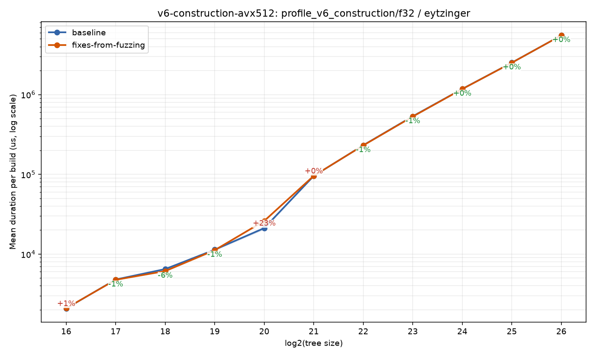
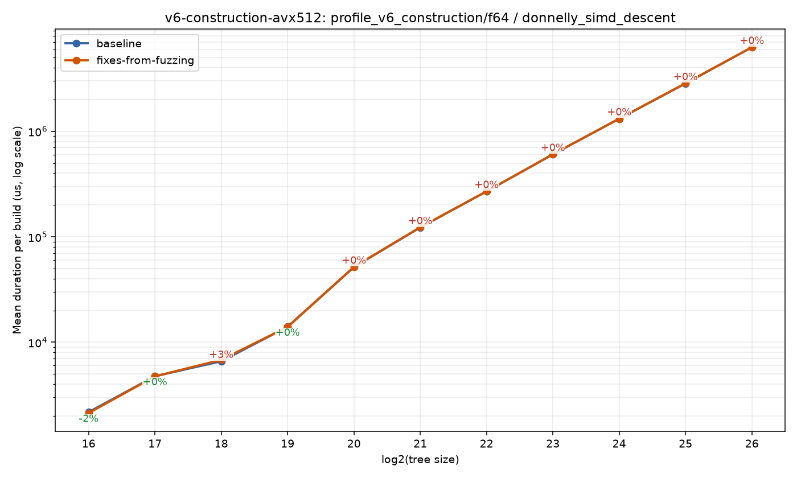
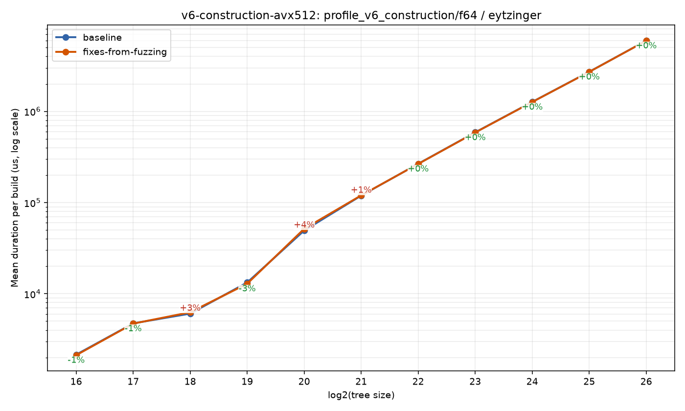

Home
Benchmark run: fixes-from-fuzzing
43fe39306ae7e108a003670615b781ad80089ac6 · 2026-08-08T21:04:18Z
Benchmark suite: construction
Branch comparison run
Compared against baseline run 20260808T022147Z-0b01eea624b6.
https://sdd-org.github.io/kiddo/v6/branches/fixes-from-fuzzing/history/20260808T210418Z-43fe39306ae7/index.html
bench_result-v6-construction-avx512-f32-eytzinger-fixes-from-fuzzing.png

bench_result-v6-construction-avx512-f64-donnelly_simd_descent-fixes-from-fuzzing.png

bench_result-v6-construction-avx512-f64-eytzinger-fixes-from-fuzzing.png
